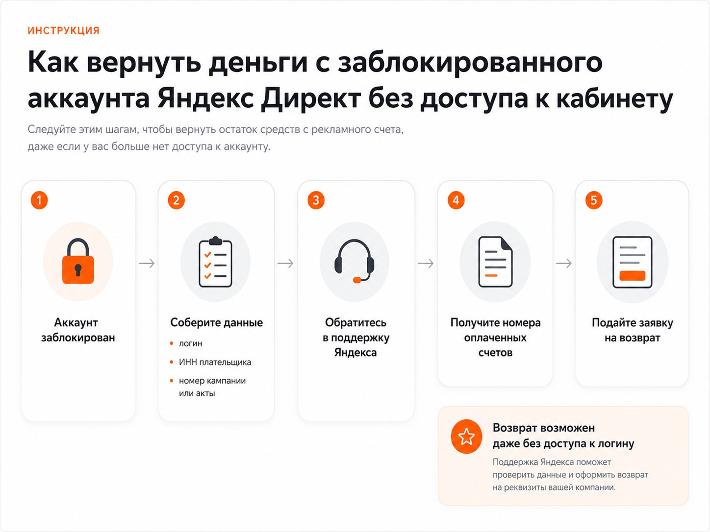
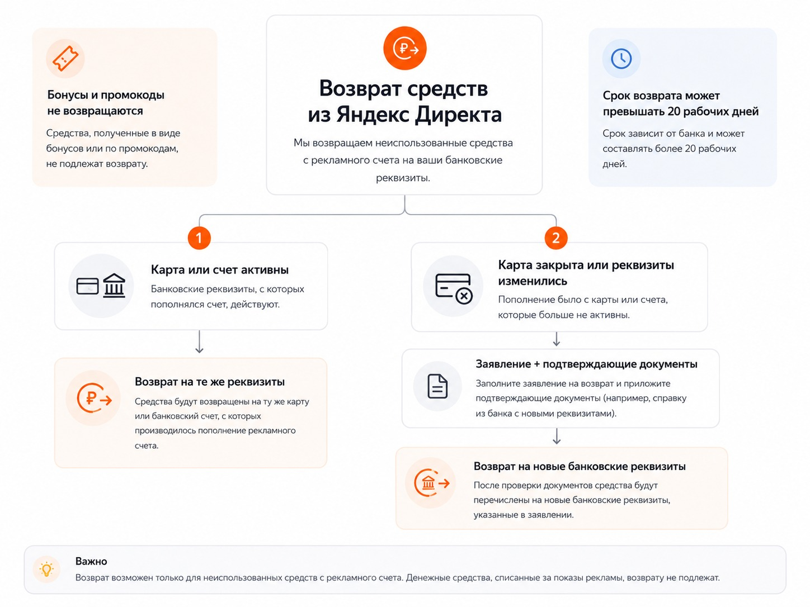

Блог о платном трафике
Можно ли вывести деньги с Яндекс Директа
Да, деньги, которые остались на счете Яндекс Директа, можно вернуть. Это касается ситуации, когда вы решили больше не запускать рекламу, закрываете проект или аккаунт оказался заблокирован.
Но технически это не обычный «вывод денег», как из электронного кошелька. Яндекс оформляет возврат ранее внесенных средств. Процедура официальная и может занять достаточно много времени. Сам Яндекс указывает, что в некоторых случаях возврат занимает более 20 рабочих дней.
Какие деньги можно вернуть из Яндекс Директа
Вернуть можно фактически внесенные и не израсходованные деньги. Если часть рекламного бюджета уже потрачена, возвращается доступный остаток оплаченных средств.
Есть несколько особенностей:
- возврат оформляется по каждому оплаченному счету отдельно;
- возвращаются реальные деньги, внесенные плательщиком;
- бонусы и средства, начисленные по промокодам, возврату не подлежат;
- сумма возврата включает уплаченный НДС;
- по умолчанию деньги возвращаются тем же способом и на те же реквизиты, с которых была произведена оплата.
Поэтому сумма, которую вы видите на общем счете Директа, не всегда полностью совпадает с суммой, которую получится получить обратно. Например, часть баланса может состоять из бонусных средств.
Как вернуть деньги с Яндекс Директа
Официальная процедура состоит из нескольких этапов.
1. Остановите рекламные кампании
Если доступ к аккаунту сохранился и реклама работает, сначала остановите активные кампании. Это нужно сделать до подачи заявки, чтобы деньги не продолжали расходоваться.
2. Найдите оплаченные счета
В интерфейсе Директа откройте раздел: Платежи и документы -> Счета. Возврат привязан не просто к общему балансу аккаунта, а к конкретным оплаченным счетам. Для каждого из них возврат обрабатывается отдельно.
3. Заполните официальную заявку на возврат
У Яндекса есть отдельная форма «Возврат средств клиентам Директа». В заявке нужно указать данные плательщика, контактную информацию, оплаченные счета и сведения, необходимые для возврата.
4. Предоставьте документы, если их запросит Яндекс
Набор документов зависит от того, кто оплачивал рекламу и каким способом.
Для физического лица Яндекс может запросить:
- копию разворота паспорта с фотографией;
- фотографию банковской карты с двух сторон, если оплата выполнялась картой;
- дополнительные документы, если деньги должны получить на другие реквизиты.
На фотографии карты должны быть видны первые 6 и последние 4 цифры номера. CVV или CVC необходимо закрыть.
Для юридического лица обычно используется заявление на возврат. В отдельных случаях Яндекс может запросить оригинал письма с подписями директора и главного бухгалтера и печатью организации. Если ИП работает без печати, вместо нее указывается ОГРНИП.

Можно ли вернуть деньги, если аккаунт Яндекс Директа заблокирован
Да. Блокировка рекламного аккаунта сама по себе не означает, что оставшиеся оплаченные деньги пропадают. Это актуально и для ситуаций, которые рекламодатели обычно называют «блокировкой по пункту 15».
В действующей редакции общих требований к рекламным материалам пункт 15 позволяет Яндексу отклонять материалы, которые не соответствуют правилам сервиса, рекламной политике, нормам нравственности и морали или на которые поступают жалобы. Отдельно Яндекс сохраняет право отклонять материалы при постмодерации без объяснения причин.
В актуальной справке Директа также перечислен ряд причин, по которым может блокироваться весь аккаунт: фишинг, клоакинг, подмена контента после модерации, предоставление недостоверных документов, попытка обхода предыдущей блокировки и другие нарушения.
Если восстановить аккаунт не получилось, можно отдельно заниматься возвратом оставшегося бюджета.
Что делать, если после блокировки нет доступа к счетам
Для оформления возврата нужен номер оплаченного счета, а посмотреть его в Директе уже не получается. У Яндекса предусмотрен такой случай.
Нужно обратиться в клиентский сервис. Чтобы специалисты смогли определить номера счетов, могут потребоваться:
- логин аккаунта;
- номер одной из рекламных кампаний или номер общего счета;
- номера нескольких актов или УПД;
- данные плательщика, например ИНН.
То есть отсутствие доступа к самому рекламному кабинету не делает возврат невозможным.

Куда вернут деньги
Стандартный вариант - на те же реквизиты, с которых поступила оплата. Если рекламу оплачивали банковской картой, деньги обычно возвращаются на эту же карту. Если расчетный счет, карта или кошелек уже закрыты, это нужно указать при оформлении возврата.
Для физлица в России при закрытой или заблокированной карте Яндекс предусматривает возврат на банковские реквизиты. Для этого могут потребоваться:
- заявление с подписью;
- копия паспорта;
- подтверждение банка о закрытии или блокировке старой карты;
- новые реквизиты для перечисления денег.
Поэтому лучше не рассчитывать, что в форме можно просто указать любую новую карту. Смена реквизитов требует дополнительного подтверждения.

Сколько Яндекс Директ возвращает деньги
Быстрого автоматического вывода здесь нет. В официальной справке Яндекс предупреждает, что в некоторых случаях процедура занимает более 20 рабочих дней.
Срок может увеличиться, если необходимо подтвердить личность, предоставить дополнительные документы, изменить реквизиты возврата или восстановить данные оплаченных счетов.
Можно ли перевести остаток на другой аккаунт Яндекс Директа
Напрямую перенести деньги между разными аккаунтами нельзя. Официальная справка предлагает другой вариант: вернуть средства с одного аккаунта, а затем использовать их для пополнения другого.
Как работает Яндекс Директ: простое объяснение для новичков.
Коротко: как вывести остаток денег из Яндекс Директа
- Остановите активные кампании.
- Найдите номера оплаченных счетов.
- Заполните официальную заявку Яндекса на возврат.
- При необходимости отправьте паспорт, заявление или другие подтверждающие документы.
- Дождитесь возврата на исходную карту или расчетный счет.
Если аккаунт заблокирован и войти в него нельзя, сначала через поддержку получите данные оплаченных счетов, а затем оформляйте возврат.
Главное - деньги на балансе Директа не обязательно тратить на рекламу только потому, что они уже были внесены. Неиспользованную часть фактически оплаченных средств можно вернуть официальным способом.
FAQ
Можно ли вывести деньги с Яндекс Директа на карту?
Да. Если реклама оплачивалась банковской картой, возврат по умолчанию производится на ту же карту.
Вернут ли деньги после блокировки аккаунта?
Официальная процедура возврата предусматривает работу даже с ситуацией, когда доступа к логину нет. Номера оплаченных счетов можно уточнить через клиентский сервис Яндекса.
Можно ли вернуть бонусы Яндекс Директа?
Нет. Возвращаются только фактически оплаченные средства. Бонусы и средства промокодов при возврате аннулируются.
Возвращается ли НДС?
Да. По официальной справке сумма возврата включает уплаченный НДС.
Сколько ждать возврата?
Фиксированного быстрого срока Яндекс не обещает. В отдельных случаях возврат занимает более 20 рабочих дней.